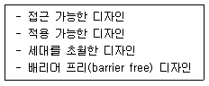
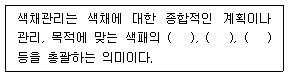
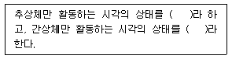
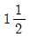
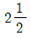
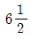
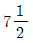

컬러리스트기사 (2016-03-06 기출문제)
1과목: 색채심리 마케팅
1. 색채조사 분석방법의 예가 아닌 것은?
- CMS법
- 면접법
- 연상법
- SD법
(정답률: 29%)

2. 명시성이 가장 뛰어난 배색으로 위험을 알리는 안전색과 대비색은?
- 노랑 + 검정
- 노랑 + 빨강
- 빨강 + 검정
- 빨강 + 흰색
(정답률: 86%)
3. 시장세분화의 이점이 아닌 것은?
- 시장기회를 보다 쉽게 찾아 낼 수 있다.
- 마케팅 믹스를 보다 효과적으로 조합할 수 있다.
- 동질적인 사징에서 생산량을 확대할 수 있는 마케팅 기법이다.
- 시장수요의 변화에 보다 신속하게 대처할 수 있다.
(정답률: 66%)
4. 소비자들에 의해 그 제품의 속성이 어떻게 인지되는가를 의미하는 용어는?
- 제품의 위치(Positioning)
- 제품의 차별화(Product Differentiation)
- 시장 세분화 (Market Segmentation)
- 라이프스타일(Life Style)
(정답률: 69%)
5. 다음중 색체사용이 가장 합리적인 것은?
- 안전색채를 고려하여 색채계획을 할 경우, 박명시 현상을 고려해야 한다.
- 도시환경 구성요소 중 하나인 자동차의 색채는 명시도가 낮은 저채도를 사용하여 눈을 자극하지 않아야 한다.
- 파랑은 인간의 자율신경 중 교감신경과 관계있어 흥분하거나 에너지를 발산하게 한다.
- 서양문화권의 제품색채를 주황색으로 계획하여 새 생명의 탄생을 연산시키고자 한다.
(정답률: 76%)
6. 색채와 문화에 대한 설명 중 틀린 것은?
- 북구계 민족들은 연보라, 스카이블루 에메랄드그린 등 한색계열의 색을 선호한다.
- 흐린 날씨의 지역 사람들은 약한 난색계를 좋아한다.
- 라틴계 민족은 난색계의 색을 선호한다,
- 에스키모인은 녹색계열과 한색계월 색을 선호한다.
(정답률: 80%)
7. 심리학, 생리학, 조명학, 미학 등에 근거를 두고 과학적으로 색채를 선택하여 사용하는 것과 관련이 없는 것은?
- 실내 환경색은 천장, 벽, 바닥의 순으로 어둡게 하는 것이 안정감이 있다.
- 회사의 홍보 및 광고 효과를 겨냥한 색의 배색으로 한다.
- 색채의 유지, 관리, 보수에 적합한 색채관리가 포함된다.
- 홍역 환자의 병실에 빨간 헝겊을 드리워 보온을 꾀하는 기능적 색의 상용법이 있다.
(정답률: 40%)
8. 소비자 의사결정 과정의 첫 번째는 문제인식 단계이다. 문제인식을 야기하는 다음의 요인 중 나머지와 다른 요인은?
- 유행하는 원피스를 구입하였는데 그에 맞는 핸드백이 없어 새로운 것을 구입하려 한다.
- 운동 후 목이 너무 말라서 음료수를 구입하려 한다.
- 타인보다 돋보이고 싶어 값비싼 명품 백을 들고 싶다.
- 부장으로 승진 되었으니 직급에 어울리는 자가용을 구입하고 싶다.
(정답률: 37%)
9. 색채와 공감각에 대한 설명 중 틀린 것은?
- 소리를 색채와 함께 공감각적으로 인식하면 낮은 음은 밝고 강한 채도의 색을 느끼게 한다.
- 좋은 냄새는 맑고 순수한 고명도색, 나쁜 냄새는 어둡고 흐린 난색계를 연상하게 한다.
- 너무 밝은 명도의 색은 식욕을 일으키지 않는다.
- 공감각 특성을 이용하면 보다 정확하고 강하게 메시지와 의미를 전할 수 있다.
(정답률: 72%)
10. 라이프 스타일의 분석방법인 사이코그래픽스(psychographics)에 대한 설명으로 가장 옳은 것은?
- 라이프스타일을 측정하기 위해 일반적으로 사용하는 방법으로 심리적 특성과 사회적 특성을 혼합한 것이다.
- 사이코그래픽스 조사는 활동, 관심, 의견의 세자기 변수에 의해 측정된다.
- 조사대장자에 대해 동일한 조사항목과 그와 관련한 질문에 대한 답으로 평가한다.
- 어떤 특정 제품이나 상표에 대한 소비자들의 태도나 행동과 같은 구체적인 라이프스타일
(정답률: 35%)
11. 어느 특정한 지역의 요소들과 자연스럽게 어울리고 선호되는 색채를 지역색이라고 부른다. 다음 중 지역색에 영향을 주는 요소와 거리가 먼 것은?
- 하늘
- 사람
- 흙
- 습도
(정답률: 35%)
12. SD법(Semantic Differential Method, 의미 분화법)에서 사용되는 형용사의 배열의 올바른 예는?
- 크다 - 작다
- 아름다운 - 시원한
- 커다란 - 슬픈
- 맑은 - 늙은
(정답률: 83%)
13. 동기유발과 관련되어 언급되는 MASLOW의 욕규 5단계 항목이 아닌 것은?
- 생리적 욕구
- 안전 욕구
- 자아실현 욕구
- 학습 욕구
(정답률: 74%)
14. 색의 선호에 대한 설명이 옳은 것은?
- 색의 선호는 성별, 연령별, 사회적 집단에 따라 다르며, 개인적 경험에 영향을 받는다.
- 일반적으로 소득이 높은 계층은 소득이 적은 계층에 비해 강하고 밝은 색을 선호한다.
- 나이가 어릴수록 노란색보다 빨간색, 파란색에 대한 선호도가 높다.
- 파랑, 빨강, 녹색, 보라, 주황, 노란색 선호도의 순서는 국제적으로 큰 차이가 있다.
(정답률: 75%)
15. 마케팅 전략의 접근법 중 직감적 전략에 대한 설명으로 틀린 것은?
- 즉각적인 대응능력의 표현이다.
- 유능한 경영자에 의존하는 전략이다.
- 체계적이고 최적화된 해결안을 도출한다.
- 단기적이고 즉흥적인 해결에 효과적이다.
(정답률: 61%)
16. 시장 표적화 단계를 가장 적절하게 설명한 것은?
- 시장을 상이한 제품을 필요로 하는 구매 집단으로 나누는 것.
- 지리적, 인구 통계적, 심리적 변수로 시장을 세분화하는 것.
- 여러 세분화된 시장 중에서 하나 또는 그 이상을 세부 선정하는 것.
- 경쟁 제품과의 위치와 상세한 마케팅 믹스를 개발하는 것
(정답률: 73%)
17. 기업의 내부환경을 분석하고 외부환경을 분석하여 마케팅전략을 수립하는 SWOT분석과 정에 해당되지 않는 것은?
- 기회
- 위협
- 약점
- 경쟁
(정답률: 71%)
18. 색채심리효과를 고려하여 색채계획을 진행하고자 할 때 옳은 것은?
- 면적이 작은 방의 한쪽 벽면을 한색으로 처리하여 진출감을 준다.
- 효과적인 배색과 실용적 배색으로 건물을 보호, 유지하는데 도움을 준다.
- 아파트 외벽 색채계획 시, 4cm x 4cv의 샘플집을 이용하여 계획하면 실제 계획한 색상을 얻을 수 있다.
- 노인들을 위한 제품의 색채계획 시 흰색, 청색 등의 색상차가 많이 나는 배색을 실시하여 신체적 특징을 배려한다.
(정답률: 74%)
19. 색채 마케팅에서 이해하여야 하는 마케팅의 기초 이론 중 4P Mix에 포함되지 않는 것은?
- Product
- Place
- Promotion
- Pride
(정답률: 58%)
20. 제품 수명주기 중 성장기의 설명으로 틀린 것은?
- 색채 마케팅에 의한 브랜드 이미지 상승
- 시장 점유의 극대화에 노력해야 하는 시기
- 새롭고 차별화된 마케팅 및 광고 전략 필요
- 유사제품이 등장하면서 시장이 확대되는 시기
(정답률: 40%)
2과목: 색채디자인
21. 굿 디자인(Good Design)을 구성하는 요소가 아닌 것은?
- 심미성
- 장식성
- 기능성
- 경제성
(정답률: 86%)
22. 다음의 디자인 요건 중 디자인 교육, 디자인 개발, 디자인 정책도 반드시 생터적 과정, 방법, 수단, 나아가 환경적 평가를 전제로 해야 하는 것은?
- 합목적성
- 경제성
- 친자연성
- 질서성
(정답률: 69%)
23. 내추럴(Natural)한 분위기를 표현하기에 가장 적합한 컬러계열은?
- w-R 계열 컬러
- sf-YR 계열 컬러
- gy-Pb 계열 컬러
- dk-B 계열 컬러
(정답률: 63%)
24. 19세기 산업혁명을 발판으로 한 현대 디자인의 사상적 배경은?
- 전통주의
- 기능주의
- 역사주의
- 절충주의
(정답률: 92%)
25. 보기와 같은 개념을 지닌 디자인은?

- 그린디자인
- 지속가능한 디자인
- UX디자인
- 유니버셜디자인
(정답률: 50%)
26. 피부색을 결정하는 색소가 아닌 것은?
- 헤모글로빈
- 멜라닌
- 카로틴
- 케라틴
(정답률: 53%)
27. 형과 바탕의 특징에 대한 설명 중 틀린 것은?
- 형과 바탕이 동시에 공유하는 선을 윤곽선이라고 하며, 이윤관석은 마당의 속성을 나타낸다.
- 형의 색채는 바탕의 색채보다 확실하고 실질적으로 보인다.
- 형은 가깝게 느껴지며 바탕은 멀게 느껴진다.
- 두 개의 영역이 같은 외곽선을 가지고 있을 때 모양을 가진 것처럼 보이는 것이 형이다.
(정답률: 73%)
28. 미용 디자인과 색채에 대한 설명 중 가장 거리가 먼 것은?
- 미용디자인은 개인의 미적 요구를 만족시키고, 보건위생상 안전해야 하며 유행을 고려해야 한다.
- 미용디자인의 범위는 일반적으로 헤어스타일, 메이크업, 네일케어, 스킨케어 등이다.
- 미용디자인에서는 동일한 색채도 개인별 색채유형에 따라 다르게 연출된다.
- 미용디자인에서의 색채는 동일한 색채 표현을 위해 색재료를 제한하여하 한다.
(정답률: 83%)
29. 디자인에 있어 색채계획(color planning)의 정의로 가장 적합간 것은?
- 색현상을 과학적으로 연구하여 빛과 도료의 원리를 밝혀내는 것이다.
- 색채 적용에 디자이너 개인의 기호를 최대한 반영하기 위한 설득과정이다.
- 디자인의 적용 상황을 연구하여 그것을 구체화하기 위한 색채를 선정하고 적용하는 과정을 말한다.
- 건물이나 설비 등에서 색채를 통한 안정을 찾고 눈이나 정신의 피로를 회복시키고 일의 능률을 향상시키는 목적을 갖는 활동이다.
(정답률: 54%)
30. 다음 중 개인의 개성과 호감이 가장 중요시 되는 분야는?
- 화장품의 색채디자인
- 주거공간의 색채디자인
- CIP의 색채디자인
- 교통표지판의 색채디자인
(정답률: 58%)
31. 미용디자인에서 메이크업의 표현 요소에 대한 설명이 틀린 것은?
- 메이크업의 표현요소는 색, 형, 질감이다.
- 색은 피부를 돋보이게 하고, 얼굴의 형태를 수정보완해 주고, 입체감을 부여하며, 개성을 부각시킨다.
- 사진촬영이나 영상매체에 출연할 경우 매트한 화장보다 그로시한 화장이 바람직하다.
- 질감은 피부의 결을 고르게 하며, 피부의 상태와 여건을 고려하여 표현한다.
(정답률: 69%)
32. 다음 중 예술 사조와 주료 표현된 색채의 연결이 틀린 것은?
- 플럭서스 - 부드럽고 유연한 느낌의 따뜻한 색조
- 아르누보 - 파스텔 계통의 부드러운 색조
- 데스틸 - 무채색과 빨강, 노랑, 파랑의 순수한 원색
- 팝아트 - 어두운 톤 위에 혼란한 강조색 사용
(정답률: 38%)
33. 2차원에서 모든 방향으로 펼쳐진 무한히 넓은 영역을 의미하며 형태를 생성하는 요소 로서의 기능을 가진 것은?
- 점
- 선
- 면
- 공간
(정답률: 65%)
34. 다음 중 바우하우스의 교육 이념이 아닌 것은?
- 인간이 기계에 의해서 노예화가 되는 것을 방지한다.
- 인간에 의한 규격화된 합리적인 양식을 추구한다.
- 기계의 이점은 유지하면서 결점만 제거한다.
- 일시적인 것이 아닌 우수한 표준을 창조한다.
(정답률: 40%)
35. 병원 색채계획 시 고려사항으로 거리가 먼 것은?
- 병실은 안방과 같은 온화한 분위기
- 수술실은 정밀한 작업을 위한 환경 조성
- 일반 사무실은 업무 효율성과 조도 고려
- 대기실은 화려한 색채적용과 동선체계 고려
(정답률: 79%)
36. 디자인의 심미성에 대한 내용으로 가장 옳은 것은?
- 디자이너의 주관적 판단에 의해 결정되어야 한다.
- 기능적인 디자인에는 심미성이 결여될 수밖에 없다.
- 소비대중이 공감할 필요는 없다.
- 사회, 문화적으로 평가가 달라질 수 있다.
(정답률: 77%)
37. 대칭에 대한 설명 중 틀린 것은?
- 좌우대칑의 예는 자연의 동ㆍ식물, 여러 가지 구조물, 사원이 건축, 전통적 가구 등이다.
- 방사대칭은 180도 회전하여 얻어지는 변화가 큰 대층으로 착시효과를 낸다.
- 비대칭은 형태상으로 불균형이지만 보는 사람에게 안정감을 주는 변화가 있는 개성적 표현이다.
- 대칭은 질서를 주기 좋고 통일감을 얻기 쉬우나, 엄격하고 딱딱한 느낌을 줄 수도 있다.
(정답률: 45%)
38. 명암대비가 있는 자극적인 색체를 선택하여 색 면의 대비나 선의 구성으로 발생하는 운 동성이 우리 눈에 주는 착시현상을 최대한 극대화시키는 것이 특징인 디자인 사조는?
- 팝아트
- 옵아트
- 미니멀아트
- 다다이즘
(정답률: 70%)
39. 디자인 활동에 있어서 적절하지 않은 것은?
- 최소의 재료와 노력에 의해 최대의 효과를 얻도록 한다.
- 창조성을 생명으로 새로운 가치를 추구한다.
- 함축적인 이미지나 아이디어를 창출하려 힘쓴다.
- 기존의 고정관념을 깨뜨리지 않도록 한다.
(정답률: 75%)
40. 독일의 베르트하이머(Wertheimer)가 중심이 된 게슈탈트(Gestalt) 학파가 제창한 그루핑 법칙이 아닌 것은?
- 근접요인
- 폐쇄요인
- 유사요인
- 비대칭요인
(정답률: 75%)
3과목: 색채관리
41. CCM의 기본원리에 대하여 옳게 설명한 것은?
- 색소의 단위 농도 당 반사율의 변화를 연결 짓는 과정에서 Kubelka-Munk 이론을 적용한다.
- 색소가 소재에 비하여 미미한 산란 특성을 갖는 경우 (예:섬유 나 종이)에는 두 개 상수 의 Kubelka-Munk 이론을 사용한다.
- CCM을 위해서는 각 안료나 염료의 대표적 농도에 대하여 단 한 번의 분광반사율을 측정하는 것으로 충분하다.
- Kubelka-Munk 이론을 금속과 진주 및 색료 또는 입사광의 편광도를 변화시키는 색소층에도 폭 넓게 적용이 가능하다.
(정답률: 48%)
42. 물체색의 분광반사율을 구하고, CIE 표준광원과 표준관측자를 사용하여 삼자극치 또는 색도좌표를 산출하는 방법으로 색을 측정하는 장비의 명칭은?
- 라이팅 부스(Lighting Booth)
- 적분구(integrating sphere)
- 분광광도계(spectrophotometer)
- 스펙트럼 팩터(spectral factor)
(정답률: 76%)
43. 디지털 색채변환방법 중 회색요소교체라고 하며, 회색부분 인쇄시 CMY 잉크를 사용하지 않고 검정잉크로 표현하여 잉크를 절약하는 방법은?
- 포토샵을 이용한 컬러변환
- CMYK 프로세스 색상분리
- UCR
- GCR
(정답률: 60%)
44. 연색성에 대한 설명이 틀린 것은?
- 광원에 따라 색이 달라보이는 현상이다.
- 연색지수는 100에 가까울수록 물체색이 고루 자연스럽게 보인다.
- 연색지수가 높다는 것은 자연광에서 보는 것처럼 물체색을 보이게 한다는 것이다.
- 식료품 매장에는 형광등을 사용하여 제품을 선명하게 표현한다.
(정답률: 63%)
45. KSA0065(표면색의 시감비교방법) 중 색비교를 위한 시환경 부스의 내부색에 대한 설명이 틀린 것은?
- 일반적으로 이용하는 부스의 내부는 명도 L가 약 45~55의 무광택의 무채색으로 한다.
- 부스 내의 작업면은 비교하려는 시료면과 가까운 휘도율을 갖는 무채색으로 한다.
- 밝은 색을 비교하는 경우는 휘도대비를 최소화하기 위해 명도 L가 약50, 또는 그것보다 낮은 명도의 무채색으로 한다.
- 어두운 색을 비교하는 경우는 명도 L가 약 25의 광택 없는 검은색으로 한다.
(정답률: 30%)
46. 대상에 따라 구분해서 사용하는 경면 광택도 측정에 대한 설명이 틀린 것은?
- 85도 경면 광택도 : 종이, 섬유 등 광택이 거의 없는 대상에 적용
- 75도 경면 광택고 : 도장면, 타일, 법랑 등 일반적 대상물의 측정
- 60도 경면 광택도 : 광택범위가 넓은 범위를 측정하는 경우에 적용
- 20도 경면 광택도 : 비교적 광택도가 높은 도장면이나 금속면끼리의 비교
(정답률: 42%)
47. 육안으로 색을 비교할 때의 주의사항으로 옳은 것은?
- 관찰자는 색에 영향을 주는 선명한 색의 옷을 입으면 안된다.
- 선명한 색을 관찰한 직후에는 엷은 색을 비교한다.
- 관찰자가 색각 정상자인지 아닌지는 상관없다.
- 관찰자는 안경을 사용하지 않는다.
(정답률: 79%)
48. 광원과 관측자에 대한 메타메리즘 영향을 받지 않는 색채관리를 위하여 가장 적합한 측 색방법은?
- 필터식 색체계를 사용한 측색
- 분광식 색체계를 사용한 측색
- gloss meter(광택계)를 사용한 측정
- 변간식 분광광도계를 사용한 측정
(정답률: 65%)
49. 색영역과 색채구현에 대한 설명으로 옳은 것은?
- 컴퓨터 모니터의 색채 구현과 프린터의 색채구현은 근본적으로 다른 원리이다.
- 유성페인트와 수성페인트는 주색을 이루는 색료와 색채가 동일하다.
- LCD 모니터의 경우는 RGB의 픽셀로 감법혼색을 하는 원리를 가지고 있다.
- 사진필름의 경우 양화필름과 음화필음의 명도범위는 거의 유사하다.
(정답률: 65%)
50. 육안 검색에 대한 조건이 아닌 것은?
- 시감 측색의 표기는 KS(한국산업표준)의 먼셀기호로 표기한다.
- 육안 검색의 측정 환경으로는 직사광선을 피해야 한다.
- 먼셀 명도 3이하의 정밀한 검사를 위해서는 광원의 조도를 300lx 정도가 적당하다.
- 비교하는 색은 인접해서 배열하고 동일평면으로 배열되도록 배치한다.
(정답률: 70%)
51. 보기의 ( )에 적합한 용어는?

- 기능, 조명, 개발
- 개발, 측색, 조색
- 조색, 안료, 염료
- 측색, 착색, 검사
(정답률: 59%)
52. 전기분해의 원리를 이용하여 물체의 표면을 다른 금속의 얇은 막으로 덮어씌우는 방법은?
- 용융도금
- 무전해도금
- 화학증착
- 전기도금
(정답률: 70%)
53. 천연색소에 대한 설명이 옳은 것은?
- 헤모글로빈은 안토시아닌 분자의 중앙에 구리를 포함하고 있다.
- 헤모시아닌은 탈로시아닌과 포피린 중앙에 철을 포함하고 있다.
- 플라보노이드는 검은색, 회색, 브라운색을 띈다.
- 클로로필은 중앙에 마그네슘 원자를 포함하고 있다.
(정답률: 37%)
54. 일반적인 컬러 프린터 잉크로 사용하는 원색은?
- Red, Green, Blue
- Cyan, Magenta, Yellow
- Red, Yellow, Blue
- Cyan, Magenta, Red
(정답률: 89%)
55. 안료와 염료의 설명으로 옳은 것은?
- 안료는 투명하나 염료는 불투명하다.
- 안료는 유기물이나 염료는 무기물이다.
- 안료는 별도의 접착제가 필요하다.
- 염료는 착색하고자 하는 매질에 용해되지 않는다.
(정답률: 56%)
56. 가법혼색을 이용하여 색을 표현하는 출력영상장비는?
- LCD 모니터
- 레이저 프린터
- 디지타이저
- 스캐너
(정답률: 75%)
57. KSA0064(색에 관한 용어)에 의한 용어의 정의가 틀린 것은?
- 색의 현시 : 관측자의 색채적응 조건이나 조명이나 배경색의 영향에 따라 변화하는 색이 보이는 결과
- 색맹 : 정상 색각에 비하여 현저히 색의 식별에 이상이 있는 색각
- 표면색 : 빛이 투과하는 투명한 물체의 표면에 속하는 것처럼 지각되는 색
- 상관색온도 : 완전 복사체의 색도와 근사하는 시료 복사의 색도 표시로, 그시료 복사에 색도가 가장 가까운 완전 복사체의 절대 온도로 표시한 것
(정답률: 50%)
58. CIEDE2000 색차색은 CIELAB 색차 ΔE′ab로 일정한 차이 이하의 정밀한 색차에 대하여 적용할 것을 권장하고 있다. 이 적용한계는?
- ΔE′ab ≤ 10.0
- ΔE′ab ≤ 5.0
- ΔE′ab ≤ 2.5
- ΔE′ab ≤ 2.0
(정답률: 34%)
59. 색채를 16진수로 표기할 때 바르게 연결된 것은?
- 녹색 - FF0000
- 마젠타 - FF00FF
- 빨강 - 00FF00KS
- 노랑 - 0000FF
(정답률: 53%)
60. 디지털 영상 출력장치의 성능을 표시하는 600dpi란?
- 1 inch 당 600개의 화점이 표시되는 인쇄영상의 분해능을 나타내는 수치
- 1 시간당 최대 인쇄매수로 나타낸 프린터의 출력 속도를 표시한 수치
- 1 cm 당 600개의 화소가 표시되는 모니터 영상의 분해능을 나타낸 수치
- 1 분당 표시되는 화면수를 나타낸 모니터의 응답 속도를 표시한 수치 정
(정답률: 71%)
4과목: 색채지각론
61. 색상의 면적 대비를 고려하여 벽을 도색할 EO 견본만을 보고 색을 선택하는 알맞은 방법은?
- 견본의 색을 그대로 선택
- 견본보다 조금 밝은 색을 선택
- 견본보다 어둡고 탁한 색을 선택
- 견본보다 밝고 연한 색을 선택
(정답률: 45%)
62. ( ) 안에 알맞은 용어를 순서대로 나열한 것은?

- 주간시, 야간시
- 주간시, 착시
- 야간시, 주간시
- 야간시, 착시
(정답률: 67%)
63. 평면색 (Film Color)에 대한 설명으로 틀린 것은?
- 면색이라고도 하며, 순수색의 감각을 가능하게 한다.
- 거리감이나, 입체감 등은 거의 지각되지 않는다.
- 작은 구멍을 통해서 볼 수 있는 색과 같은 것을 말한다.
- 색의 구체적인 지각표면이 고려된 색이다.
(정답률: 47%)
64. 채도가 높은 노란색이 또렷이 보이게 하기 위한 가장 적절한 주변의 색은?
- 밝은 노란색
- 저채도의 파란색
- 연한 빨간색
- 선명한 초록색
(정답률: 70%)
65. 포화도에 관한 설명으로 옳은 것은?
- 동일 조명 조건아래의 백색면의 밝기에 대한 상대량을 말한다.
- 흰색과 검정색은 포화도가 100%이다.
- 해당 색 표면 자체의 밝기에 대한 상대적인 양으로 판단할 수 있다.
- 색표면이 유채색을 얼마나 나타내는가에 대한 절대적 속성이다.
(정답률: 23%)
66. 연극무대에서 주인공을 향해 파랑과 녹색조명을 각각 다른 방향에서 비출떄 주인공에게 비춰지는 조명색은?
- Cyan
- Yellow
- Magenta
- Gray
(정답률: 62%)
67. 색의 온도감에 대한 설명 중 틀린 것은?
- 온도감은 인간의 경험과 심리에 의존하는 경향이 짙다.
- 온도감은 색의 세 가지 속성 중에서 채도에 주로 영향을 받는다.
- 중성색은 때로는 차갑게, 때로는 따뜻하게 느껴지는 색이다.
- 따뜻한 색은 차가운 색에 비하여 진출되어 보인다.
(정답률: 64%)
68. 하나의 색만을 변화시키거나 더함으로써 이미지 전체의 색조를 변화시킬 수 있다는 효과는?
- 맥스웰 효과
- 베졸드 효과
- 푸르킨예 효과
- 헬름홀츠 효과
(정답률: 52%)
69. 빛의 특성과 작용에 대한 설명이 틀린 것은?
- 적색광인 장파장은 침투력이 강해서 인체에 닿았을 때 깊은 곳까지 열로서 전달되게 된다.
- 백열물질에서 방출되는 에너지의 양과 분포는 물체의 온도에 따라 달라진다.
- 물체색은 빛의 반사량과 흡수량에 의해 결정되어 모두 흡수하면 검정, 모두 반사하면 흰색으로 보인다.
- 하늘의 청색빛은 대기 중의 분자나 미립자에 의하여 태양광선이 간섭된 것이다.
(정답률: 66%)
70. 영ㆍ헬름홀츠의 3원색 설에서 노랑의 색각을 느끼는 원인은?
- red, blue, green을 느끼는 시세포가 동시에 흥분
- red, blue를 느끼는 시세포가 동시에 흥분
- blue, green을 느끼는 시세포가 동시에 흥분
- red, green을 느끼는 시세포가 동시에 흥분
(정답률: 63%)
71. 한 가지 색으로 보이는 직조 면을 확대해보면 여러 가지 색으로 짜여 있음을 알 수 있다. 이와 같은 혼색방법의 예가 아닌 것은?
- TV 화면
- 점묘법
- 옵아트
- 색팽이
(정답률: 13%)
72. 바탕색이 탁한 배경 무늬와 선명한 배경의 무늬는 선명도에서 변화가 있다. 이를 이용한 색채 심리효과는?
- 색상대비
- 명도대비
- 채도대비
- 면적대비
(정답률: 63%)
73. 색의 물체와 배경관계에서 배경이 낮은 명도일 때 밝은 물체는 어떻게 보이는가?
- 후퇴
- 수축
- 진출
- 동화
(정답률: 73%)
74. 가법혼합의 삼원색이 아닌 것은?
- Red
- Blue
- Green
- Yellow
(정답률: 80%)
75. 명시성에 대한 설명으로 틀린 것은?
- 색의 식별력에 대한 시각의 성질을 명시성이라 한다.
- 배경과 도형의 관계에서 상대적 명도차에 영향을 받는다.
- 주의를 기울이지 않더라도 사람의 시선을 끌어 눈에 띠는 속성을 말한다.
- 조명상태가 명시성 효과에 영향을 줄 수 있다.
(정답률: 31%)
76. 색채의 경연감에 관한 설명으로 틀린 것은?
- 밝고 채도가 낮은 난색은 부드러운 느낌을 준다.
- 색채의 경연감은 주로 명도와 관련이 있다.
- 채도가 높은 한색은 딱딱한 느낌을 준다.
- 어두운 한색은 딱딱한 느낌을 준다.
(정답률: 48%)
77. 주목성의 강약 관계로 틀린 것은?
- 저채도의 노란색 ＜ 고채도의 빨간색
- 어두운 회색 ＜ 선명한 초록색
- 고채도의 파란색 ＜ 고채도의 빨간색
- 따뜻한 느낌의 주황색 ＜ 시원한 느낌의 파란색
(정답률: 60%)
78. 색채의 지각적 특성이 다른 하나는?
- 빨간 망에 들어 있는 귤은 원래보다 빨갛게 보인다.
- 회색 블라우스에 검정 줄무늬가 있으면 블라우스 색이 어둡게 보인다.
- 파란 원피스에 보라색 리본이 달려 있으면 리본은 원래보다 붉게 보인다.
- 붉은 벽돌을 쌓은 벽은 회색의 시멘트에 의해 탁하게 보인다.
(정답률: 73%)
79. 배경과 주위에 있는 색의 영향으로 색의 성질이 변화되어 보이는 현상은?
- 대비
- 조화
- 동화
- 순응
(정답률: 32%)
80. 다음 색 중 명소시에서 암소시 상태로 옮겨질 때 시감도가 낮아져서 가장 어둡게 보이는 것은?(오류 신고가 접수된 문제입니다. 반드시 정답과 해설을 확인하시기 바랍니다.)
- 파랑
- 노랑
- 빨강
- 주황
(정답률: 7%)
5과목: 색채체계론
81. 단청의 색에서 활기찬 주황빛의 붉은색으로 생동감이 넘치는 색의 이름은?
- 석간주
- 뇌록
- 육색
- 장단
(정답률: 40%)
82. 먼셀의 색입체에 관한 설명 중 틀린 것은?
- 축 좌ㆍ우의 색은 색상환에서 마주보고 있는 보색이다.
- 각 색상 중 가장 바깥의 색이 순색이다.
- 색상, 명도, 채도의 변화를 한 눈에 볼 수 있다.
- 색입체를 수직으로 잘라보면 같은 명도를 나타내므로 등명도면이라고 한다.
(정답률: 58%)
83. 관용색과 먼셀표기법의 연결이 옳은 것은?
- 주홍 - 7.5YR 3/4
- 올리브색 - 7.5Y 8.5/12
- 비둘기색 - 5PB 6/2
- 자주 - 5P 8/4
(정답률: 32%)
84. CIE L*a*b* 색체계에 대한 설명으로 틀린 것은?
- a* 와 b* 는 색 방향을 나타낸다.
- L* = 50은 중명도 이다.
- a* 는 red - green 축에 관계된다.
- b* 는 밝기의 척도이다.
(정답률: 69%)
85. 비렌의 색삼각형에 의한 조화방법 중 가장 깨끗하고 신선한 이미지를 주는 조화법은?
- 순색 - 톤 - 회색에 의한 배색
- 순색 - 명색조 - 흰색에 의한 배색
- 흰색 - 회색 - 검정에 의한 배색
- 순색 - 암색조 - 검정에 의한 배색
(정답률: 79%)
86. NCS 색체계에 대한 설명으로 옳은 것은?
- 색상체계는 W-S, W-C, S-C의 기본척도로 나누어진다.
- 파버 비렌과 같이 7개의 뉘앙스를 사용한다.
- 기본척도 내의 한 지점은 속상간의 관계성에 의해 색상이 결정된다.
- 하양색도, 검정색도, 유채색도를 표준 표기로 한다.
(정답률: 17%)
87. CIE 색도도에 대한 설명으로 틀린 것은?
- 색도도 내의 두 점을 잇는 선 위에는 포화도에 의한 색 변화가 늘어서 있다.
- 색도도 바깥 둘레의 한 점과 중앙의 백색점을 잇는 선 위에는 포화도의 변화만으로 된 색 변화가 늘어서 있다.
- 어떤 한 점의 색에 대한 보색은 중앙의 백색점을 연장한 색도도 바깥 둘레에 있다.
- 색도도 내의 임의의 세 점을 잇는 3각형 속에는 세 점의 혼합에 의한 모든 색이 들어있다.
(정답률: 12%)
88. 다음 배색 중에서 유사색상이면서 톤 차이가 큰 것은?
- 2.5Y9/2 - 2.5YR3/3
- 2.5YR4/4 - 5G8/2
- 5Y9/3 - 5Y8/2
- 5B5/10 - 2.5PB4/8
(정답률: 42%)
89. 오스트발트 색체계에서 등흑계열에 따라 조화로운 색을 선택하는 방법은?
- 등색상 삼각형의 C,B와 평행선상에 있는색
- 등색상 삼걱형의 C,W와 평생선상에 있는색
- 등색상 삼걱형의 W,B와 평행선상에 있는색
- 등색상 삼걱형의 W,B를 축으로 회전시켜 같은 위치에 있는 색
(정답률: 53%)
90. 제시된 색체계들의 발표된 순서를 가장 최근의 것부터 바르게 배열한 것은?
- 먼셀 → 오스발트 → P.C.C.S → CIE L*a*b*
- CIE L'a'b' → 먼셀 → 오스트발트 → P.C.C.S
- 오스트발트 → P.C.C.S → CIE L*a*b* → 먼셀
- CIE L*a*b* → P.C.C.S → 오스트발트 → 먼셀
(정답률: 37%)
91. 오스트발트 CHM 색상환의 30색에 추가된 색이 아닌 것은?




(정답률: 28%)
92. 한국산업표준에서 사용하는 ' 색이름 수식형-기준색이름'의 연결이 옳은 것은?
- 빨강-자주, 주황, 보라
- 초록빛-연두, 갈색, 파랑
- 파란-연두, 초록, 청록
- 보랏빛-하양, 회색, 검정
(정답률: 27%)
93. magenta, lemon, ultrmarine blue, emerald green 등은 어떤 색명인가?
- ISCC-NIST 일반 색명
- 관용색명
- 표준색명
- 계통색명
(정답률: 66%)
94. 먼셀 색체계 5PB 3/12에서 12의 의미와 다른 것은?
- saturation
- lightness
- chroma
- colorfulness
(정답률: 55%)
95. 전통색 이름과 설명이 옳은 것은?
- 지황색 : 종이의 백색
- 담자색 : 홍색과 주색의 중간색
- 감색 : 아주 연한 붉은색
- 치색 : 스님의 옷색
(정답률: 46%)
96. 먼셀 색입체에서 수직축이 나타내는 것은?
- 명도단계
- 색상
- 채도단계
- 색이름
(정답률: 52%)
97. 색채표준과 거리가 먼 설명은?
- 특수 안료를 사용하여 재현한다.
- 색을 정확하게 표시하기 위해 필요하다.
- 색채간의 지각적 등보성을 갖춰야 한다.
- 색채 속성배열이 과학적 근거가 뒷받침 되어야 한다.
(정답률: 60%)
98. 문ㆍ스펜서의 조 화의 분류가 아닌 것은?
- 눈부심
- 오메가 공간
- 분리효과
- 면적효과
(정답률: 23%)
99. 독일공업규격으로 색상(T), 포화도(S), 암도(D)로 표히사는 색체계는?
- NCS
- DIN
- RAL
- JIS
(정답률: 73%)
100. DIN 색체계와 가장 유사한 색상 구조를 갖는 색체계는?
- Munesll 색체계
- NCS 색체계
- Yxy 색체계
- Ostwald 색체계
(정답률: 41%)